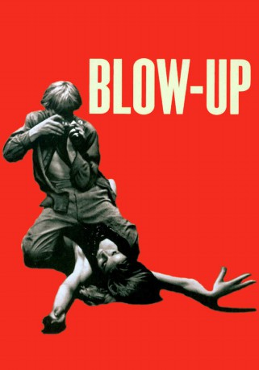

#3661 Blow Up
Alternativ: Blow-Up (Englischer Titel)
Auszeichnungen: für 2 Oscars nominiert
 
 IMDB-Wertung: 7.7 / 10
IMDB-Wertung: 7.7 / 10  Metascore: 0
Metascore: 0 
Als der britische Starphotograph Thomas in einem Park Bilder von einem Pärchen macht, wird er entdeckt. Die Frau verfolgt ihn bis zu seinem Atelier, wo sie um jeden Preis den Film haben will, auf dem sie verewigt ist. Thomas gibt ihr einen anderen Film und entdeckt auf den Bildern, die die Frau haben wollte, Verdächtiges: Er glaubt, eine Mord auf die Spur gekommen zu sein...
Jahr: 1966
Dauer: 111 Minuten
FSK: 16
Land: England Studio: MGMTonspuren: AAC2.0 - ,
Untertitel: Deutsch, Englisch,
Auflösung: 720p (1272x720) Größe: 3420 MB
Genre: Thriller, Drama, Mystery
Regisseur: Michelangelo Antonioni
Drehbuch: Rémy Belvaux
Soundtrack:
Darsteller:
 Vanessa Redgrave als Jane
Vanessa Redgrave als Jane- Sarah Miles als Patricia
 David Hemmings als Thomas
David Hemmings als Thomas- John Castle als Bill
 Jane Birkin als The Blonde
Jane Birkin als The Blonde Peter Bowles als Ron
Peter Bowles als Ron- Veruschka von Lehndorff als Verushka
- Jeff Beck als Himself - The Yardbirds , uncredited
 Tsai Chin als Thomas's receptionist , uncredited
Tsai Chin als Thomas's receptionist , uncredited- Jimmy Page als Himself - The Yardbirds , uncredited
- Reg Wilkins als Reg - Thomas's assistant , uncredited
- Gillian Hills als The Brunette
- Julian Chagrin als Mime
- Claude Chagrin als Mime
- Susan Brodrick als Antique shop owner , uncredited
- Julio Cortázar als Homeless , uncredited
- Chris Dreja als Himself - The Yardbirds , uncredited
- Melanie Hampshire als Model , uncredited
- Harry Hutchinson als Shopkeeper , uncredited
- Jill Kennington als Model , uncredited
- Mary Khal als Fashion editor , uncredited
- Chas Lawther als Waiter , uncredited
- Dyson Lovell als Man outside restaurant , uncredited
- Jim McCarty als Himself - The Yardbirds , uncredited
- Peggy Moffitt als Model , uncredited
- Rosaleen Murray als Model , uncredited
- Ann Norman als Model , uncredited
- Ronan O'Casey als Jane's lover in park , uncredited
- Keith Relf als Himself - The Yardbirds , uncredited
- Janet Street-Porter als Girl Dancing In Ricky Tick Club , uncredited
 Fred Wood als Homeless Man , uncredited
Fred Wood als Homeless Man , uncredited
Datei: X:\1966\Blow Up (1966, FSK16, 1272x720).mkv seit 14.05.2016
Festplatte: HD 1900-1970
 Es gibt insgesamt 27 Filme in der Gruppe '1966'
Es gibt insgesamt 27 Filme in der Gruppe '1966'